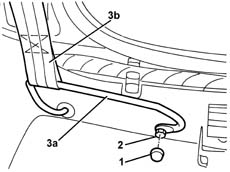
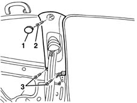
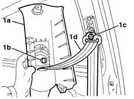

7040H38 central pillar upper element - r r
- Path
- Procedures > 70 FITTINGS > 7040 BODYSHELL INTERIOR TRIMS AND FITTINGS > 7040H roof panel lining > 7040H38 central pillar upper element - r r
- Kind
- repair procedure (removal / refitting; the operation number is the code)
- Applies to
- all engines; all production periods
- Interactive page
- https://sloeber94.github.io/elrnDB-lYpsln/en/#/2429594
Applies to: all engines; all production periods
 Removing
Removing
 Refitting
Refitting7040L40 front compartment scuff strip - r r
7050A20 one-piece rear seat cushion - r r
1. Release the cover.
2. Undo the bolt.
3. Remove the retaining bracket (3a) and release it from the end (3b) of the seat belt.

Applies to: all engines; all production periods
1. Remove the cover.
2. Undo the bolt.
3. Undo the lower trim retaining bolts.

Applies to: all engines; all production periods
1. Remove the pilar trim (1a) releasing the retainer (1b) from the idler nut (1c), then release the trim from the seat belt (1d).

Applies to: all engines; all production periods
Refitting
RemovingCheck that the cover is undamaged.
Fit the seat belt and position the trim fitting the retainer.
Tighten the bolts and fit the cover.
Fit the seat belt, position the lower retaining bracket and tighten the bolt.
 | Fastening | Component | Ø | Value (daNm) |
|---|---|---|---|---|
- | Bolt | FRONT BELT SLIDING BRACKET. | 7/16" | 4.0 |
Position the bolt cover.
Topics linked from this page (4)
- 7040H50 rear panel - r r
- 7040L40 front compartment scuff strip - r r
- 7050A10 rear seat - r+r
- 7050A20 one-piece rear seat cushion - r r
Topics that link to this page (10)
- 5570T26 aerial for car radio - r+r
- 5580C50 (HEAD- BAG MODULE ) (one), left or right - R.R.
- 7030B47 GUIDE device for sliding roof movement control cables - R.R .
- 7030B48 FIXED REAR TRANSPARENT section of sliding roof - R.R .
- 7030B50 sun roof guide , one , lh or rh - r r
- 7030B70 sun-roof control switch - r+r
- 7040H10 roof panel lining - r r
- 7040H16 roof panel lining - r r
- 7065A12 front seat belt (one), lh or rh, with pretensioner on wheel - r r
- 7065A18 Front set belt HEIGHT ADJUSTER , (one), left or right - R.R.